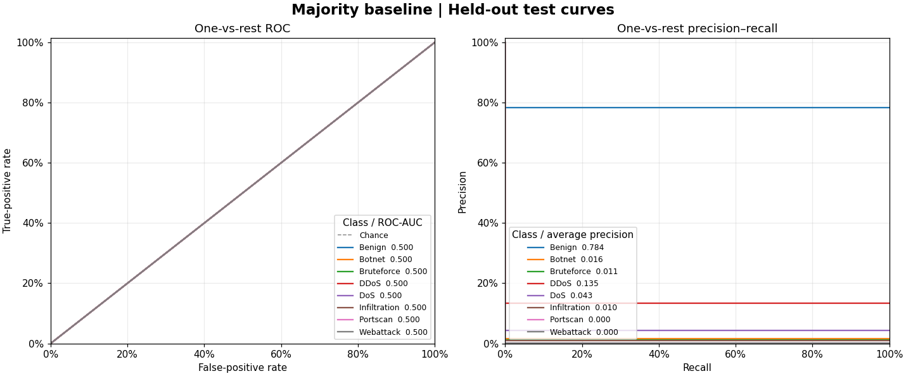
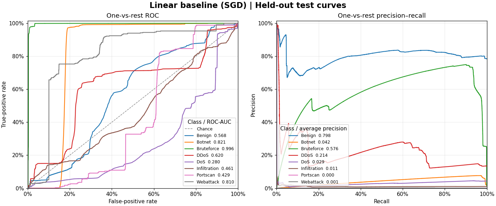
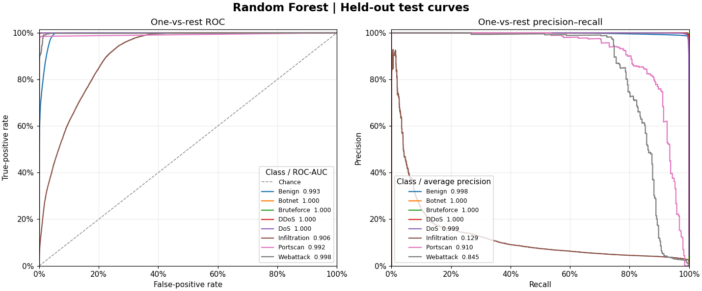
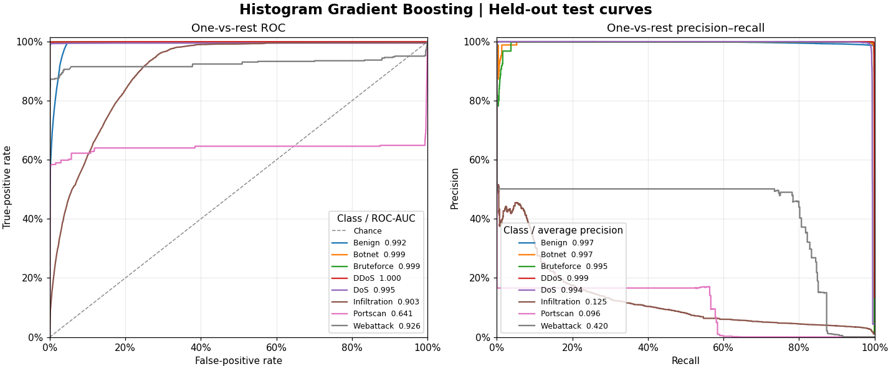
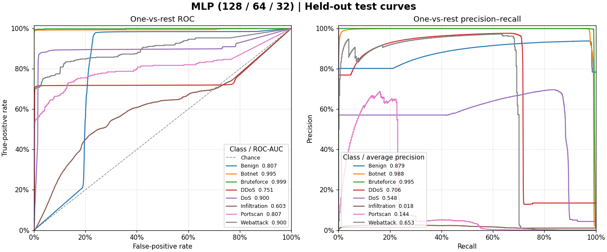
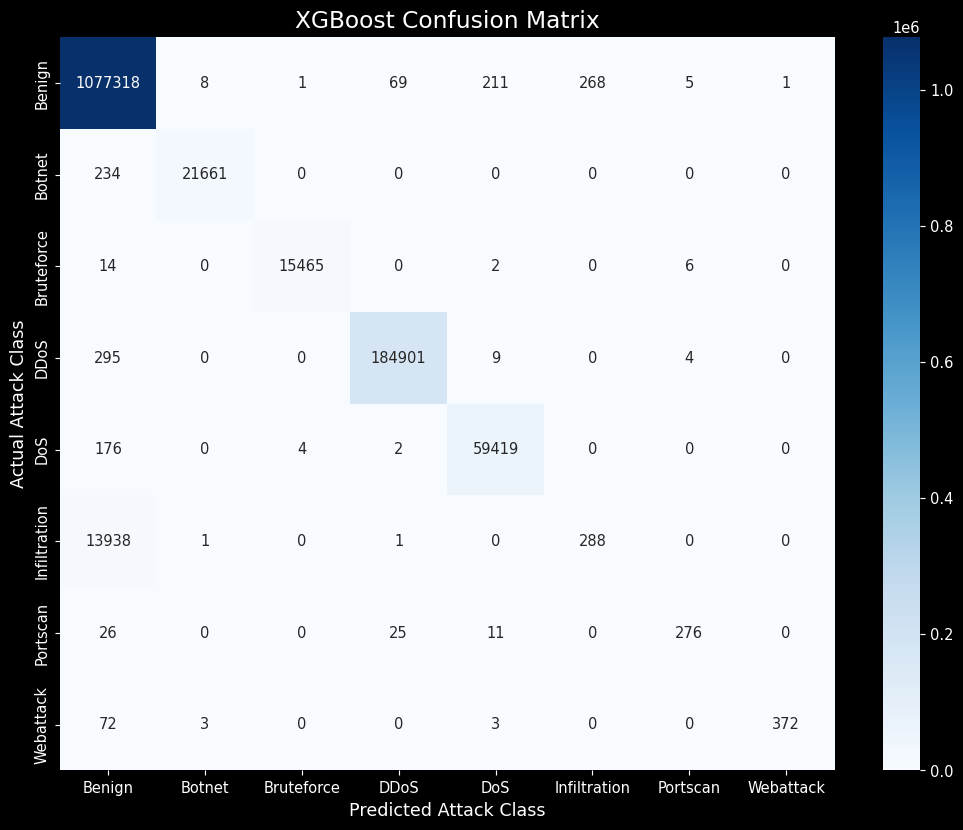

The prediction unit
One completed network flow, represented by packet counts, byte rates, durations, timing statistics and flags. Predict
ClassLabel
from flow metadata, without reading payload content.
Multiclass Network Attack Classification
from Network Flow Features
Can the statistics of a network flow distinguish everyday traffic from an attack? Explore eight traffic classes, five models, and the errors hidden behind high accuracy.
One completed network flow, represented by packet counts, byte rates, durations, timing statistics and flags. Predict
ClassLabel
from flow metadata, without reading payload content.
Benign, Botnet, Bruteforce, DDoS, DoS, Infiltration, Portscan or Webattack. These are the eight existing collection labels; no additional regrouping or removal of rare classes is shown.
Performance describes this benchmark and its split. It does not establish detection of unseen attack families, early-flow detection, or generalization to a new network or time period.
Benign flows outnumber Portscan flows by roughly 3,187 to 1 .
The notebook loads
cic-collection.parquet
: 9,167,581 rows and 59 columns. Removing
Label
and separating
ClassLabel
leaves 57 candidate predictors. The audit retained 53 for modeling.
The CIC-IDS-Collection catalog combines CIC-IDS2017, CIC-DoS2017, CSE-CIC-IDS2018 and CIC-DDoS2019 with harmonized labels and feature cleanup. The results JSON records the local parquet checksum.
The class distribution shows flows retained after the duplicate audit.
Label
is dropped;
ClassLabel
becomes the sole target. Numeric label encoding identifies categories without adding an order to the prediction task.
Replace ±∞ with NaN and drop incomplete rows. The audit removed 0 rows at this step.
✓ In notebookThe audit found 0 repeated column names and removed 4 identical feature columns. Before splitting, it removed 310 redundant same-label rows and 14 rows with conflicting labels.
✓ Audited in notebookThe filter found 0 constant features in the training sample. The same 53 retained features are used in validation and test.
✓ Audited in notebookRobustScaler uses training medians and interquartile ranges for the linear baseline and MLP. It reduces sensitivity to extreme feature scales; it does not remove outliers. Tree ensembles are unscaled.
✓ In notebookThe stratified 20% training sample contains 1,283,416 rows. The pipeline keeps the parquet feature precision through the audit and split.
✓ Subsampling recordedThese four column pairs had identical values across all 9,167,581 input rows. The audit kept one column from each pair.
| Removed column | Retained column |
|---|---|
| Avg Fwd Segment Size | Fwd Packet Length Mean |
| Avg Bwd Segment Size | Bwd Packet Length Mean |
| Subflow Fwd Packets | Total Fwd Packets |
| Subflow Bwd Packets | Total Backward Packets |
Constant features in the dataset: none. Constant features removed using the training sample: none.
The audit kept one row per feature vector with a single label and excluded all rows in 7 conflicting-label groups. It retained 9,167,257 of 9,167,581 input rows before splitting.
| Class | Input rows | Retained rows |
|---|---|---|
| Benign | 7,186,189 | 7,185,875 |
| Botnet | 145,968 | 145,968 |
| Bruteforce | 103,244 | 103,244 |
| DDoS | 1,234,729 | 1,234,723 |
| DoS | 397,344 | 397,343 |
| Infiltration | 94,857 | 94,854 |
| Portscan | 2,255 | 2,255 |
| Webattack | 2,995 | 2,995 |
| Model | Why use it? | Recorded configuration |
|---|---|---|
| Majority baseline | A prevalence-based sanity check; computed here from validation support. | Always predict Benign |
| Linear baseline (SGD) | Log-loss linear decision boundaries; exposes whether linear separation is adequate. | RobustScaler · balanced weights · seed 42 |
| Random Forest | Bagged trees capture interactions and nonlinear boundaries. | 50 trees · depth 15 · balanced weights |
| Histogram Gradient Boosting | Boosted binned trees improve residual errors with efficient split search. | 100 iterations · learning rate 0.1 |
| XGBoost | Regularized boosted trees model nonlinear feature interactions. | 100 trees · depth 6 · rate 0.1 · hist |
| MLP | A nonlinear neural alternative; sensitive to scale and class imbalance. | 128 → 64 → 32 · batch 2,048 · early stopping |
**Implementation note:** The linear baseline uses `SGDClassifier(loss='log_loss')`. Class weighting is applied to the SGD and Random Forest models, while XGBoost is trained without explicit sample weighting.
Exact duplicates and conflicting-label vectors are handled before the stratified split. Models train on a 20% sample of the training partition. The split is random at the flow level.
Macro-F1 gives every class equal weight. Precision measures false-alert burden; recall measures missed attacks. Weighted-F1 and accuracy summarize frequency-weighted behavior. One-vs-rest PR curves expose rare-class tradeoffs.
Model comparisons use validation results. See the held-out test reports and ROC and precision–recall curves for the remaining models and majority baseline. The existing XGBoost test curves use the same split.
Compare validation confusion matrices for all five trained models and the majority baseline. Switch between row percentages and flow counts.
Scores are shown on a 0–1 scale and displayed to two decimal places.
The class-weighted SGD baseline reached its iteration limit. Its confusion matrix shows the resulting trade-off between detection and false alerts.
On audited validation data, MLP recall was 22.00% for Webattack, 0.01% for Infiltration, and 0.30% for Portscan.
The test ROC and precision–recall curves show how each model ranks flows for each class. Validation confusion matrices summarize the final predicted class for each validation flow.
Reports and one-vs-rest curves use 1,375,089 audited test flows. Open a model to see per-class results and curves. The XGBoost test curves are in the notebook figures below.
SGD curves use class decision scores because probability normalization underflows for some flows. The other models use class probabilities.
| Model | Accuracy | Macro-F1 | Macro ROC-AUC | Macro avg. precision |
|---|---|---|---|---|
| Majority baseline | 78.39% | 0.1099 | 0.5000 | 0.1250 |
| Linear baseline (SGD) | 29.66% | 0.0863 | 0.6232 | 0.2089 |
| Random Forest | 78.20% | 0.7650 | 0.9861 | 0.8600 |
| Histogram Gradient Boosting | 98.68% | 0.7317 | 0.9319 | 0.7029 |
| MLP (128 / 64 / 32) | 92.64% | 0.6075 | 0.8453 | 0.6165 |
| Class | Precision | Recall | F1 | Test flows | ROC-AUC | Average precision |
|---|---|---|---|---|---|---|
| Benign | 0.7839 | 1.0000 | 0.8788 | 1,077,882 | 0.5000 | 0.7839 |
| Botnet | 0.0000 | 0.0000 | 0.0000 | 21,895 | 0.5000 | 0.0159 |
| Bruteforce | 0.0000 | 0.0000 | 0.0000 | 15,486 | 0.5000 | 0.0113 |
| DDoS | 0.0000 | 0.0000 | 0.0000 | 185,208 | 0.5000 | 0.1347 |
| DoS | 0.0000 | 0.0000 | 0.0000 | 59,602 | 0.5000 | 0.0433 |
| Infiltration | 0.0000 | 0.0000 | 0.0000 | 14,228 | 0.5000 | 0.0103 |
| Portscan | 0.0000 | 0.0000 | 0.0000 | 339 | 0.5000 | 0.0002 |
| Webattack | 0.0000 | 0.0000 | 0.0000 | 449 | 0.5000 | 0.0003 |
| macro avg | 0.0980 | 0.1250 | 0.1099 | 1,375,089 | — | — |
| weighted avg | 0.6144 | 0.7839 | 0.6889 | 1,375,089 | — | — |

| Class | Precision | Recall | F1 | Test flows | ROC-AUC | Average precision |
|---|---|---|---|---|---|---|
| Benign | 0.7729 | 0.3524 | 0.4841 | 1,077,882 | 0.5682 | 0.7980 |
| Botnet | 0.0000 | 0.0000 | 0.0000 | 21,895 | 0.8214 | 0.0422 |
| Bruteforce | 0.0000 | 0.0000 | 0.0000 | 15,486 | 0.9958 | 0.5756 |
| DDoS | 0.2150 | 0.1469 | 0.1745 | 185,208 | 0.6199 | 0.2144 |
| DoS | 0.0019 | 0.0021 | 0.0020 | 59,602 | 0.2801 | 0.0293 |
| Infiltration | 0.0186 | 0.0402 | 0.0255 | 14,228 | 0.4609 | 0.0106 |
| Portscan | 0.0001 | 0.1032 | 0.0001 | 339 | 0.4287 | 0.0002 |
| Webattack | 0.0023 | 0.1960 | 0.0045 | 449 | 0.8103 | 0.0011 |
| macro avg | 0.1264 | 0.1051 | 0.0863 | 1,375,089 | — | — |
| weighted avg | 0.6351 | 0.2966 | 0.4033 | 1,375,089 | — | — |

| Class | Precision | Recall | F1 | Test flows | ROC-AUC | Average precision |
|---|---|---|---|---|---|---|
| Benign | 0.9974 | 0.7241 | 0.8391 | 1,077,882 | 0.9935 | 0.9979 |
| Botnet | 0.9644 | 0.9973 | 0.9806 | 21,895 | 1.0000 | 0.9996 |
| Bruteforce | 0.9991 | 0.9962 | 0.9976 | 15,486 | 1.0000 | 0.9997 |
| DDoS | 0.9883 | 0.9980 | 0.9931 | 185,208 | 1.0000 | 0.9998 |
| DoS | 0.9649 | 0.9974 | 0.9809 | 59,602 | 0.9999 | 0.9994 |
| Infiltration | 0.0413 | 0.8822 | 0.0789 | 14,228 | 0.9057 | 0.1286 |
| Portscan | 0.8287 | 0.8702 | 0.8489 | 339 | 0.9924 | 0.9097 |
| Webattack | 0.2601 | 0.8731 | 0.4008 | 449 | 0.9976 | 0.8453 |
| macro avg | 0.7555 | 0.9173 | 0.7650 | 1,375,089 | — | — |
| weighted avg | 0.9841 | 0.7820 | 0.8620 | 1,375,089 | — | — |

| Class | Precision | Recall | F1 | Test flows | ROC-AUC | Average precision |
|---|---|---|---|---|---|---|
| Benign | 0.9855 | 0.9983 | 0.9919 | 1,077,882 | 0.9921 | 0.9975 |
| Botnet | 0.9971 | 0.9892 | 0.9931 | 21,895 | 0.9994 | 0.9968 |
| Bruteforce | 0.9969 | 0.9974 | 0.9972 | 15,486 | 0.9994 | 0.9946 |
| DDoS | 0.9992 | 0.9956 | 0.9974 | 185,208 | 0.9997 | 0.9994 |
| DoS | 0.9945 | 0.9828 | 0.9886 | 59,602 | 0.9949 | 0.9941 |
| Infiltration | 0.4378 | 0.0233 | 0.0442 | 14,228 | 0.9025 | 0.1247 |
| Portscan | 0.1677 | 0.5516 | 0.2572 | 339 | 0.6411 | 0.0958 |
| Webattack | 0.4793 | 0.7483 | 0.5843 | 449 | 0.9262 | 0.4200 |
| macro avg | 0.7573 | 0.7858 | 0.7317 | 1,375,089 | — | — |
| weighted avg | 0.9820 | 0.9868 | 0.9824 | 1,375,089 | — | — |

| Class | Precision | Recall | F1 | Test flows | ROC-AUC | Average precision |
|---|---|---|---|---|---|---|
| Benign | 0.9344 | 0.9804 | 0.9569 | 1,077,882 | 0.8066 | 0.8790 |
| Botnet | 0.9894 | 0.9746 | 0.9819 | 21,895 | 0.9951 | 0.9884 |
| Bruteforce | 0.9960 | 0.9910 | 0.9935 | 15,486 | 0.9991 | 0.9951 |
| DDoS | 0.9655 | 0.7016 | 0.8127 | 185,208 | 0.7509 | 0.7062 |
| DoS | 0.6947 | 0.8444 | 0.7623 | 59,602 | 0.9002 | 0.5483 |
| Infiltration | 0.0000 | 0.0000 | 0.0000 | 14,228 | 0.6028 | 0.0181 |
| Portscan | 0.0000 | 0.0000 | 0.0000 | 339 | 0.8074 | 0.1443 |
| Webattack | 0.9159 | 0.2183 | 0.3525 | 449 | 0.9004 | 0.6529 |
| macro avg | 0.6870 | 0.5888 | 0.6075 | 1,375,089 | — | — |
| weighted avg | 0.9199 | 0.9264 | 0.9195 | 1,375,089 | — | — |

These figures come from the audited notebook run. The confusion matrix uses validation flows. The ROC and precision–recall curves use test flows.



Choose a test example and a trained model, then click Predict to run it in your browser.
Each prediction uses all 53 flow features. Confidence shows the model’s uncalibrated class score.
AI assistance was used to build this website, review the supplied methodological notes, rerun the notebook models locally, and add their validation confusion matrices.
ChatGPT also helped export the trained models and implement inference for the interactive flow inspector.
This static website contains aggregate metrics, saved plots, model parameters, and features from eight public benchmark flows. The inspector evaluates the models locally in your browser.